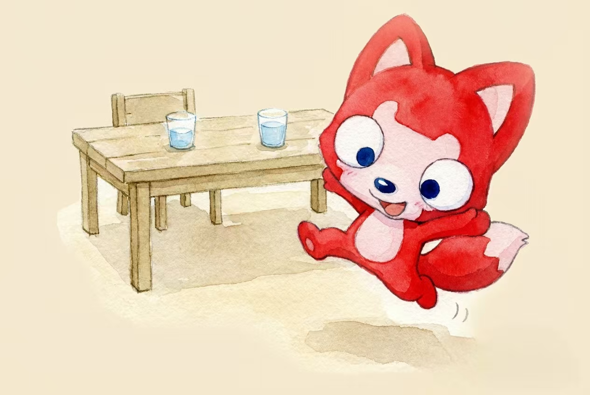
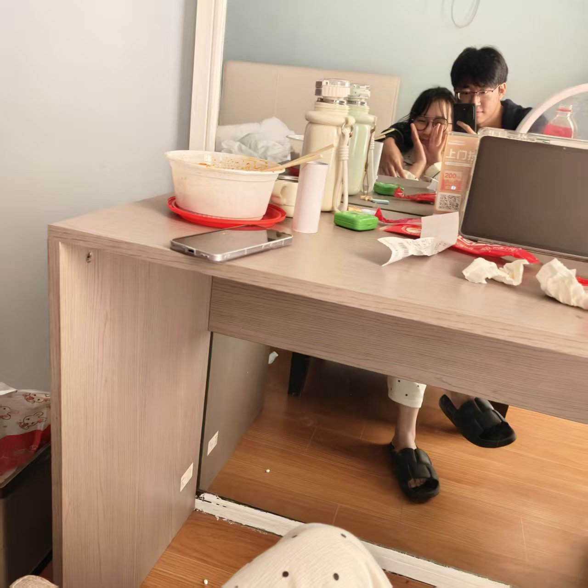

--❤爱李淑慧一生一世
按键盘 "↓" 倾听我的爱情告白
从前有一个人叫刘长治。也可以叫他臭治治。

过去的治治一直是一个人生活，享受着孤独，但也憧憬着爱情。

一个人的长廊

一个人的山岗

一个人的地铁

一个人的周末

但他依然乐观，微笑着，等待着

生活难免有风风雨雨

他总是能够轻松的应对

并且面带阳光、自信的笑容

生活也不会总是一帆风顺

但他总是能勇敢的面对
随时准备接受生活的挑战


可是治治的爱情又在哪里呢？
在镜子里面吗？他不敢相信

他去问大树，我的爱情在哪里？
大树告诉他，也许就在不远的地方

于是，治治一个人继续向前走
走过一年年春夏秋冬

直到有一天，在落叶金黄的季节，他和李淑慧相遇了

刘长治喜欢李淑慧，因为她的出现，刘长治脸上有了更加灿烂的笑容

刘长治的爱情真的来了


后来，刘长治鼓起了勇气，去找李淑慧

他们在一起了，治治好高兴
治治每周末都想去找李淑慧

然后两个人一起出去玩

晚上他们会一起回短暂的家

第二天晚上，治治会一个人回家
但他每次都非常开心
生活充满了意义

然后高兴地进入梦乡，希望梦到慧慧

治治想陪慧慧逛好多好多次街

想和慧慧去好多地方玩

想和慧慧每天一起吃好吃的，不想让她减肥

想和她结婚

但这还有些远，治治需要继续努力

他偶尔自己做饭

幻想着以后的每个早上，她和李淑慧一起在家吃饭

然后高高兴兴的送李老师上班
治治觉得未来好有动力
因为他会有个家
那个有慧慧在的地方

臭治治偶尔会惹慧慧生气

但他不想这样


臭治治知道他有很多做的不对
如果慧慧不开心，窗外就没有风景

如果没有和慧慧的未来


治治又怎会飞的更高更远
治治不想这样
他想要不再让慧慧生气，不再让慧慧难过，不再让慧慧伤心

希望她永远开心
爱情就像花草一样
需要用包容来浇灌

日子一天一天的
治治总不在慧慧身边
总觉得为她付出的太少
他很愧疚


他想准备一个情人节礼物 她想让很开心 但臭治治太笨了 她不知道该准备什么

治治真的很想她 但他真的很开心 很快就能和慧慧一起玩 还有未来一生的相伴
臭治治会继续努力
为了他和慧慧幸福的家


臭治治虽然第一次谈恋爱，但是他知道，他做的不够好，异地恋也很难。他虽然很爱很爱慧慧，但是他行动出的爱不够多。他一定会在未来余生补给慧慧


慧慧：不要说永远
治治：那就一直在
慧慧：我不喜欢画大饼
治治：那就一直做
执子之手，与子偕老


情人节快乐
I love you


治治和慧慧的故事会一直继续下去。
无论精彩、平淡都会是他们喜欢的。